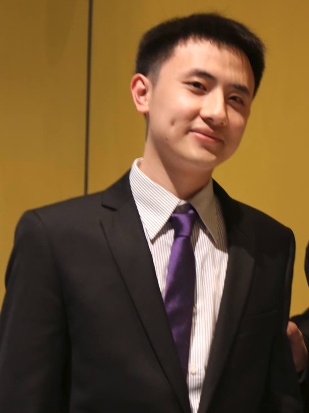

Weikai Chen

I am a Senior Research Scientist at Tencent America. Previously, I was a postdoc and then a researcher at Vision and Graphics Lab (VGL)@USC ICT working with Prof. Hao Li. I got my PhD degree from the Department of Computer Science, The University of Hong Kong, under the supervision by Prof. Wenping Wang. During my Ph.D., I also had a wonderful time visiting Dr. Sylvain Lefebvre at Inria, Nancy. Prior to that, I received both my Bachelor and Master degree in Electronic Engineering from Tianjin University.
My research lies in the interplay among computer graphics, computer vision and machine learning. In particular, I am interested in broad topics in image-based 3D reasoning and 3D deep learning, including 3D reconstruction of humans (face/hair/body), general objects and scenes, differentiable rendering and point cloud analysis.

News
-
11/2019: Gave an invited talk at GAMES web seminar. Slides can be found here.
-
09/2019: One paper accepted to NeurIPS 2019.
-
08/2019: I am invited to serve as the Program Committee of AAAI 2020, CVM 2020 and IEEE AIVR 2019.
-
07/2019: Our ICCV'19 paper SoftRas received three Strong Accepts.
-
07/2019: Three papers accepted to ICCV 2019! Two of them are selected as Oral Presentation.
-
06/2019: One paper accepted to UIST 2019.
-
06/2019: Our oral paper SiCloPe is selected as CVPR Best Paper Finalists.
-
03/2019: I am invited to serve as the Program Committee of SMI-FASE 2019.
-
03/2019: Our CVPR'19 paper SiCloPe is selected as Oral Presentation.
-
02/2019: One paper accepted to IEEE VR 2019.
-
02/2019: One paper accepted to CVPR 2019.
-
08/2018: I am invited to serve as the International Program Committee of CVM 2019.
-
07/2018: Two papers accepted to ECCV 2018.
-
07/2018: One paper accepted to BMVC 2018.
-
04/2018: I am invited to serve as the International Program Committee of Pacific Graphics 2018.
-
04/2018: One paper accepted to SIGGRAPH 2018.
-
03/2018: One paper accepted to CVPR 2018 (Spotlight Presentation).
-
07/2017: Two papers accepted to SIGGRAPH Asia 2017.
Selected Publications (Full List)
- paper
-
abstract
Recent advances in 3D deep learning have shown that it is possible to train highly effective deep models for 3D shape generation, directly from 2D images. This is particularly interesting since the availability of 3D models is still limited compared to the massive amount of accessible 2D images, which is invaluable for training. The representation of 3D surfaces itself is a key factor for the quality and resolution of the 3D output. While explicit representations, such as point clouds and voxels, can span a wide range of shape variations, their resolutions are often limited. Mesh-based representations are more efficient but are limited by their ability to handle varying topologies. Implicit surfaces, however, can robustly handle complex shapes, topologies, and also provide flexible resolution control. We address the fundamental problem of learning implicit surfaces for shape inference without the need of 3D supervision. Despite their advantages, it remains nontrivial to (1) formulate a differentiable connection between implicit surfaces and their 2D renderings, which is needed for image-based supervision; and (2) ensure precise geometric properties and control, such as local smoothness. In particular, sampling implicit surfaces densely is also known to be a computationally demanding and very slow operation. To this end, we propose a novel ray-based field probing technique for efficient image-to-field supervision, as well as a general geometric regularizer for implicit surfaces, which provides natural shape priors in unconstrained regions. We demonstrate the effectiveness of our framework on the task of single-view image-based 3D shape digitization and show how we outperform state-of-the-art techniques both quantitatively and qualitatively.
- paper
- code
- old version
-
abstract
Rendering bridges the gap between 2D vision and 3D scenes by simulating the physical process of image formation. By inverting such renderer, one can think of a learning approach to infer 3D information from 2D images. However, standard graphics renderers involve a fundamental discretization step called rasterization, which prevents the rendering process to be differentiable, hence able to be learned. Unlike the state-of-the-art differentiable renderers, which only approximate the rendering gradient in the back propagation, we propose a truly differentiable rendering framework that is able to (1) directly render colorized mesh using differentiable functions and (2) back-propagate efficient supervision signals to mesh vertices and their attributes from various forms of image representations, including silhouette, shading and color images. The key to our framework is a novel formulation that views rendering as an aggregation function that fuses the probabilistic contributions of all mesh triangles with respect to the rendered pixels. Such formulation enables our framework to flow gradients to the occluded and far-range vertices, which cannot be achieved by the previous state-of-the-arts. We show that by using the proposed renderer, one can achieve significant improvement in 3D unsupervised single-view reconstruction both qualitatively and quantitatively. Experiments also demonstrate that our approach is able to handle the challenging tasks in image-based shape fitting, which remain nontrivial to existing differentiable renderers.
- paper
-
abstract
Near-range portrait photographs often contain perspective distortion artifacts that bias human perception and challenge both facial recognition and reconstruction techniques. We present the first deep learning based approach to remove such artifacts from unconstrained portraits. In contrast to the previous state-of-the-art approach, our method handles even portraits with extreme perspective distortion, as we avoid the inaccurate and error-prone step of first fitting a 3D face model. Instead, we predict a distortion correction flow map that encodes a per-pixel displacement that removes distortion artifacts when applied to the input image. Our method also automatically infers missingfacial features, i.e. occluded ears caused by strong perspective distortion, with coherent details. We demonstrate that our approach significantly outperforms the previous stateof-the-art both qualitatively and quantitatively, particularly for portraits with extreme perspective distortion or facial expressions. We further show that our technique benefits a number of fundamental tasks, significantly improving the accuracy of both face recognition and 3D reconstruction and enables a novel camera calibration technique from a single portrait. Moreover, we also build the first perspective portrait database with a large diversity in identities, expression and poses.
- paper
-
abstract
Reconstructing the 3D mesh of a general object from a single image is now possible thanks to the latest advances of deep learning technologies. However, due to the nontrivial difficulty of generating a feasible mesh structure, the state-of-the-art approaches~\cite{wang2018pixel2mesh,kanazawa2018learning} often simplify the problem by learning the displacements of a template mesh that deforms it to the target surface.Though reconstructing a 3D shape with complex topo logy can be achieved by deforming multiple mesh patches, it remains difficult to stitch the results to ensure a high meshing quality. In this paper, we present an end-to-end single-view mesh reconstruction framework that is able to generate high-quality meshes with complex topology from a single genus-0 template mesh. The key to our approach is a novel progressive shaping framework that alternates between shape deformation and topology modifying. While a deformation network predicts the per-vertex translations that reduce the gap between the reconstructed mesh and the ground truth, a novel topology modification network is employed to prune the error-prone faces and refine the boundary conditions, enabling the evolution of topology. By iterating over the two procedures, one can progressively modify the mesh topology while achieving higher reconstruction accuracy. Extensive experiments demonstrate that our approach significantly outperforms the current state-of-the-art methods both qualitatively and quantitatively, especially for the shapes with complex topology. - paper
-
abstract
While hair is an essential component of virtual humans, it is also one of the most challenging and time-consuming digital assets to create. Existing automatic techniques lack the generality and flexibility for users to create the exact intended hairstyles. Meanwhile, manual authoring interfaces often require considerable skills and experiences from character modelers, and are difficult to navigate for intricate 3D hair structures. We propose an interactive hair modeling system that can help create complex hairstyles that would otherwise take weeks or months with existing tools. Modelers, including novice users, can focus on the overall intended hairstyles and local hair deformations, as our system intelligently suggests the desired hair parts. Our method combines the flexibility of manual authoring and the convenience of data-driven automation. Since hair contains intricate 3D structures such as buns, knots, and strands, they are inherently challenging to create from scratch using traditional 2D interfaces. Our system provides a new 3D hair authoring interface for immersive interaction in virtual reality (VR). We use a strip-based representation, which is commonly adopted in real-time games due to rendering efficiency and modeling flexibility. The output strips can be converted to other hair formats such as strands. Users can draw high-level guide strips, from which our system predicts the most plausible hairstyles in the dataset via a trained deep neural network. Each hairstyle in our dataset is composed of multiple variations, serving as blendshapes to fit the user drawings via global blending and local deformation. The fitted hair models are visualized as interactive suggestions, that the user can select, modify, or ignore. We conducted a user study to confirm that our system can significantly reduce manual labor while improve the output quality for modeling a variety of hairstyles that are challenging to create using existing techniques.
- paper
-
abstract
We introduce a new silhouette-based representation for modeling clothed human bodies using deep generative models. Our method can reconstruct a complete and textured 3D model of a person wearing clothes from a single input picture. Inspired by the visual hull algorithm, our implicit representation uses 2D silhouettes and 3D joints of a body pose to describe the immense shape complexity and variations of clothed people. Given a segmented 2D silhouette of a person and its inferred 3D joints from the input picture, we first synthesize consistent silhouettes from novel view points around the subject. The synthesized silhouettes, which are the most consistent with the input segmentation are fed into a deep visual hull algorithm for robust 3D shape prediction. We then infer the texture of the subject's back view using the frontal image and segmentation mask as input to a conditional generative adversarial network. Our experiments demonstrate that our silhouette-based model is an effective representation and the appearance of the back view can be predicted reliably using an image-to-image translation network. While classic methods based on parametric models often fail for single-view images of subjects with challenging clothing, our approach can still produce successful results, which are comparable to those obtained from multi-view input.
- paper
- video
-
abstract
We present a deep learning based volumetric approach for performance capture using a passive and highly sparse multi-view capture system. State-of-the-art performance capture systems require either pre-scanned actors, large number of cameras or active sensors. In this work, we focus on the task of template-free, per-frame 3D surface reconstruction from as few as three RGB sensors, for which conventional visual hull or multi-view stereo methods fail to generate plausible results.We introduce a novel multi-view Convolutional Neural Network (CNN) that maps 2D images to a 3D volumetric field and we use this field to encode the probabilistic distribution of surface points of the captured subject. By querying the resulting field, we can instantiate the clothed human body at arbitrary resolutions. Our approach scales to different numbers of input images, which yield increased reconstruction quality when more views are used. Although only trained on synthetic data, our network can generalize to handle real footage from body performance capture. Our method is suitable for high-quality low-cost full body volumetric capture solutions, which are gaining popularity for VR and AR content creation. Experimental results demonstrate that our method is significantly more robust and accurate than existing techniques when only very sparse views are available.
- suppl.
- paper
- video
-
abstract
We introduce a deep learning-based method to generate full 3D hair geometry from an unconstrained image. Our method can recover local strand details and has real-time performance. State-of-the-art hair modeling techniques rely on large hairstyle collections for nearest neighbor retrieval and then perform ad-hoc refinement. Our deep learning approach, in contrast, is highly efficient in storage and can run 1000 times faster while generating hair with 30K strands. The convolutional neural network takes the 2D orientation field of a hair image as input and generates strand features that are evenly distributed on the parameterized 2D scalp. We introduce a collision loss to synthesize more plausible hairstyles, and the visibility of each strand is also used as a weight term to improve the reconstruction accuracy. The encoder-decoder architecture of our network naturally provides a compact and continuous representation for hairstyles, which allows us to interpolate naturally between hairstyles. We use a large set of rendered synthetic hair models to train our network. Our method scales to real images because an intermediate 2D orientation field, automatically calculated from the real image, factors out the difference between synthetic and real hairs. We demonstrate the effectiveness and robustness of our method on a wide range of challenging real Internet pictures and show reconstructed hair sequences from videos.
- MIT Tech Review
- Nvidia Review
- paper
- video
-
abstract
We present a deep learning-based technique to infer high-quality facial reflectance and geometry given a single unconstrained image of the subject, which may contain partial occlusions and arbitrary illumination conditions. The reconstructed high-resolution textures, which are generated in only a few seconds, include high-resolution skin surface reflectance maps, representing both the diffuse and specular albedo, and medium- and highfrequency displacement maps, thereby allowing us to render compelling digital avatars under novel lighting conditions. To extract this data, we train our deep neural networks with a high-quality skin reflectance and geometry database created with a state-of-the-art multi-view photometric stereo system using polarized gradient illumination. Given the raw facial texture map extracted from the input image, our neural networks synthesize complete reflectance and displacement maps, as well as complete missing regions caused by occlusions. The completed textures exhibit consistent quality throughout the face due to our network architecture, which propagates texture features from the visible region, resulting in high-fidelity details that are consistent with those seen in visible regions. We describe how this highly underconstrained problem is made tractable by dividing the full inference into smaller tasks, which are addressed by dedicated neural networks. We demonstrate the effectiveness of our network design with robust texture completion from images of faces that are largely occluded. With the inferred reflectance and geometry data, we demonstrate the rendering of high-fidelity 3D avatars from a variety of subjects captured under different lighting conditions. In addition, we perform evaluations demonstrating that our method can infer plausible facial reflectance and geometric details comparable to those obtained from high-end capture devices, and outperform alternative approaches that require only a single unconstrained input image.
- suppl.
- paper
-
abstract
We present a learning-based approach for synthesizing facial geometry at medium and fine scales from diffusely-lit facial texture maps. When applied to an image sequence, the synthesized detail is temporally coherent. Unlike current state-of-the-art methods [17, 5], which assume ”dark is deep”, our model is trained with measured facial detail collected using polarized gradient illumination in a Light Stage [20]. This enables us to produce plausible facial detail across the entire face, including where previous approaches may incorrectly interpret dark features as concavities such as at moles, hair stubble, and occluded pores. Instead of directly inferring 3D geometry, we propose to encode fine details in high-resolution displacement maps which are learned through a hybrid network adopting the state-of-the-art image-to-image translation network [29] and super resolution network [43]. To effectively capture geometric detail at both mid- and high frequencies, we factorize the learning into two separate sub-networks, enabling the full range of facial detail to be modeled. Results from our learning-based approach compare favorably with a high-quality active facial scanhening technique, and require only a single passive lighting condition without a complex scanning setup.
- project page
- paper
- video
-
abstract
Recent advances in 3D printing have made it easier to manufacture customized objects by ordinary users in an affordable manner, and therefore spurred high demand for more accessible methods for designing and fabricating 3D objects of various shapes and functionalities. In this paper we present a novel approach to model and fabricate surface-like objects composed of connected tiles, which can be used as objects in daily life, such as ornaments, covers, shades or handbags. Our method is designed to maximize the efciency and ease of fabrication. Given a base surface and a set of tile elements as user input, our method generates a tight packing of connected tiles on the surface. We apply an efcient and tailored optimization scheme to pack the tiles on the base surface with fabrication constraints. Then, to facilitate the fabrication process, we use a novel method based on minimal spanning tree to decompose the set of connected tiles into several connected patches. Each patch is articulated and can be developed into a plane. This allows printing with an inexpensive FDM printing process without requiring any supporting structures, which are often troublesome to remove. Finally, the separately printed patches are reassembled to form the fnal physical object, a shell surface composed of connected user-specifed tiles that take the shape of the input base surface. We demonstrate the utility of our method by modeling and fabricating a variety of objects, from simple decorative spheres to moderately complex surfaces, such as a handbag and a teddy bear. Several user controls are available, to distribute different type of tiles over the surface and locally change their scales and orientations
- project page
- paper
- video
-
abstract
3D tensor field design is important in several graphics applications such as procedural noise, solid texturing, and geometry synthesis. Different fields can lead to different visual effects. The topology of a tensor !eld, such as degenerate tensors, can cause artifacts in these applications. Existing 2D tensor field design systems cannot be used to handle the topology of a 3D tensor field. In this paper, we present to our knowledge the first 3D tensor !eld design system. At the core of our system is the ability to edit the topology of tensor !elds. We demonstrate the power of our design system with applications in solid texturing and geometry synthesis.
- project page
- paper
- video
-
abstract
Filigrees are thin patterns found in jewelry, ornaments and lace fabrics. They are often formed of repeated base elements manually composed into larger, delicate patterns. Digital fabrication simplifies the process of turning a virtual model of a filigree into a physical object. However, designing a virtual model of a filigree remains a time consuming and challenging task. The difficulty lies in tightly packing together the base elements while covering a target surface. In addition, the filigree has to be well connected and sufficiently robust to be fabricated. We propose a novel approach automating this task. Our technique covers a target surface with a set of input base elements, forming a filigree strong enough to be fabricated. We exploit two properties of filigrees to make this possible. First, as filigrees form delicate traceries they are well captured by their skeleton. This affords for a simpler definition of operators such as matching and deformation. Second, instead of seeking for a perfect packing of the base elements we relax the problem by allowing appearance preserving partial overlaps. We optimize a filigree by a stochastic search, further improved by a novel boosting algorithm that records and reuses good configurations discovered during the process. We illustrate our technique on a number of challenging examples reproducing filigrees on large objects, which we manufacture by 3D printing. Our technique affords for several user controls, such as the scale and orientation of the elements.
- two-minute paper

Shichen Liu, Shunsuke Saito, Weikai Chen, Hao Li
NeurIPS 2019
"the first differentiable renderer for implicit field"

Shichen Liu, Tianye Li, Weikai Chen, Hao Li
ICCV 2019 (Oral Presentation) - 3 Strong Accepts
"a truly differentiable renderer for rasterization-based rendering"
Yajie Zhao*, Zeng Huang*, Tianye Li, Weikai Chen, Chloe LeGendre, Xinglei Ren, Ari Shapiro, and Hao Li
ICCV 2019 (Oral Presentation)
"a method for recifying facial distortions in near-range portraits"

Junyi Pan, Xiaoguang Han, Weikai Chen, Jiapeng Tang and Kui Jia
ICCV 2019
"a single-view mesh reconstruction approach that can handle objects with arbitrary topologies"

Jun Xing, Koki Nagano, Weikai Chen, Haotian Xu, Li-Yi Wei, Jingwan Lu, Byungmoon Kim, Yajie Zhao, Hao Li
UIST 2019
"an immersive hair modeling tool in VR"

Ryota Natsume, Shunsuke Saito, Zeng Huang, Weikai Chen, Chongyang Ma, Hao Li, Shigeo Morishima
CVPR 2019 (Oral Presentation) - CVPR Best Paper Finalists
"single-view based clothed human reconstruction"

Zeng Huang, Tianye Li, Weikai Chen, Yajie Zhao, Jun Xing, Chloe LeGendre, Linjie Luo, Chongyang Ma, Hao Li
ECCV 2018
"volumetric body reconstruction from highly sparse views"
Yi Zhou, Liwen Hu, Jun Xing, Weikai Chen, Han-Wei Kung, Xin Tong, Hao Li
ECCV 2018
"deep learning based 3D hair reconstruction from a single image"
Shugo Yamaguchi*, Shunsuke Saito*, Koki Nagano, Yajie Zhao, Weikai Chen, Shigeo Morishima, Hao Li
SIGGRAPH 2018
"inference of complete face reflectance maps from a single unconstrained image"
Loc Huynh, Weikai Chen, Shunsuke Saito, Jun Xing, Koki Nagano, Andrew Jones, Hao Li, Paul Debevec
CVPR 2018 (Spotlight Presentation)
"pore-level facial geometry inference from a single image"
Weikai Chen, Yuexin Ma, Sylvain Lefebvre, Shiqing Xin, Jonàs Martínez and Wenping Wang
SIGGRAPH Asia 2017
"a *magic* way to fabricate curved surfaces flatly"

Jonathan Palacios, Lawrence Roy, Prashant Kumar, Chen-Yuan Hsu, Weikai Chen, Chongyang Ma, Li-Yi Wei, Eugene Zhang
SIGGRAPH Asia 2017
"the first framework to design and edit 3D tensors"

Weikai Chen, Xiaolong Zhang, Shiqing Xin, Yang Xia , Sylvain Lefebvre and Wenping Wang
SIGGRAPH 2016
"how to make example-based 3D jewelry"